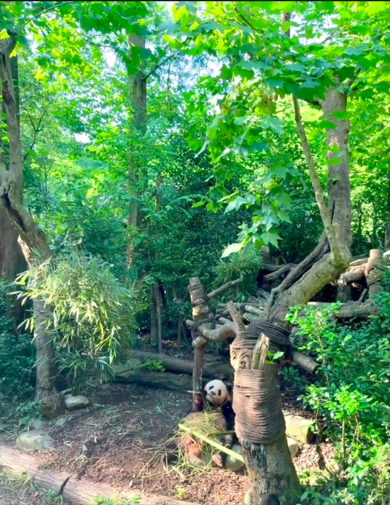
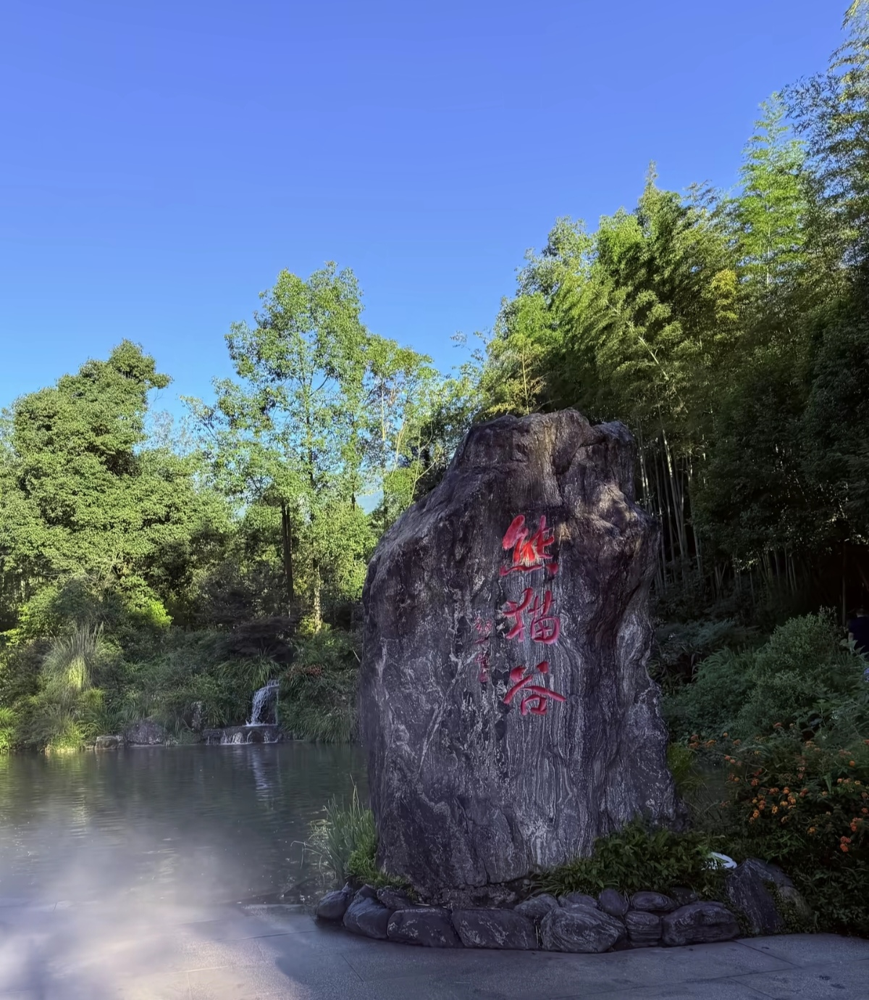
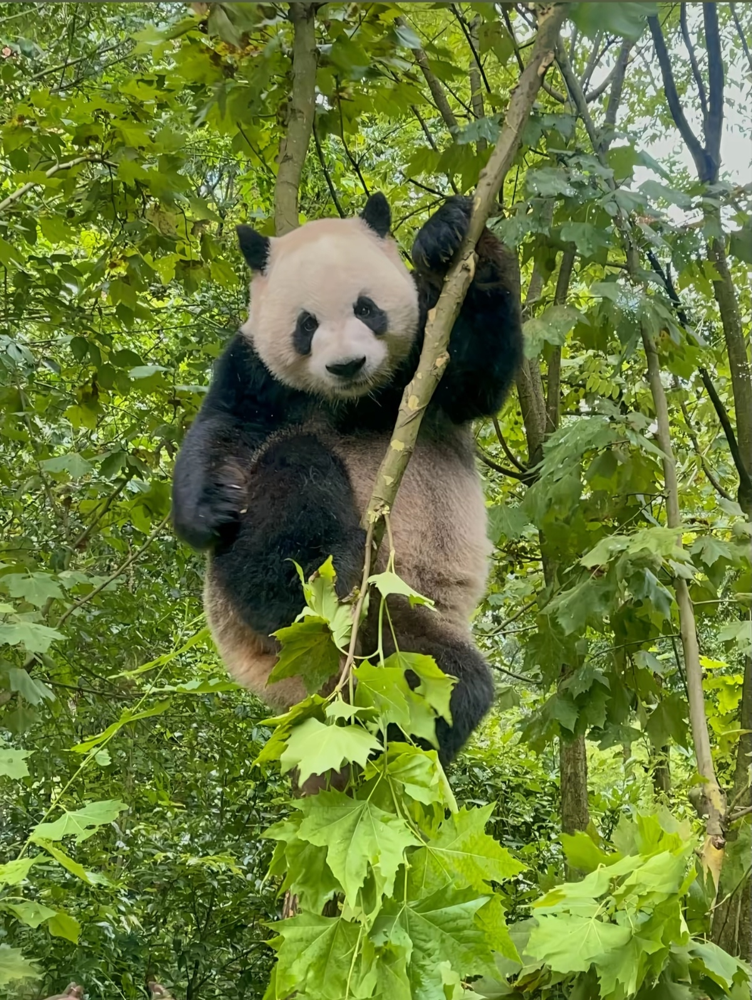
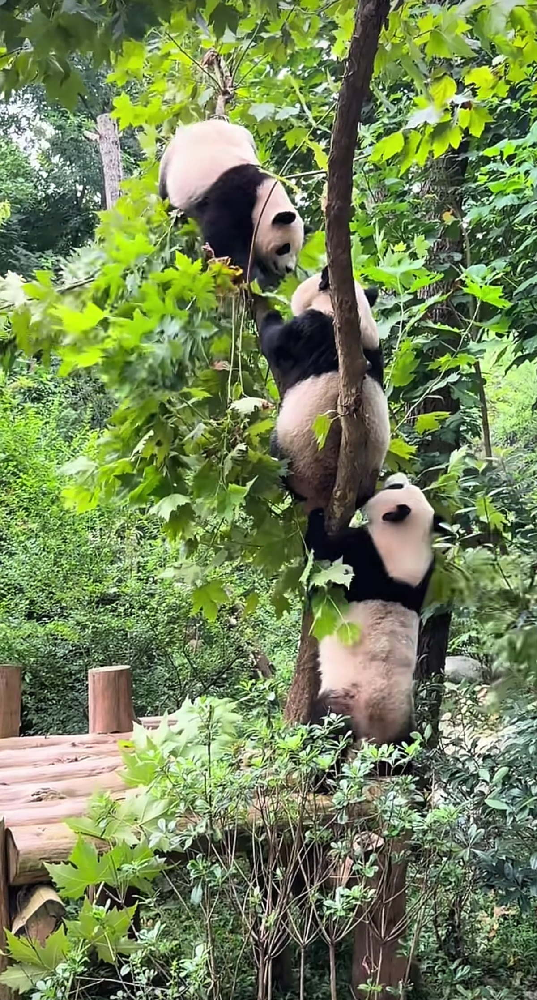
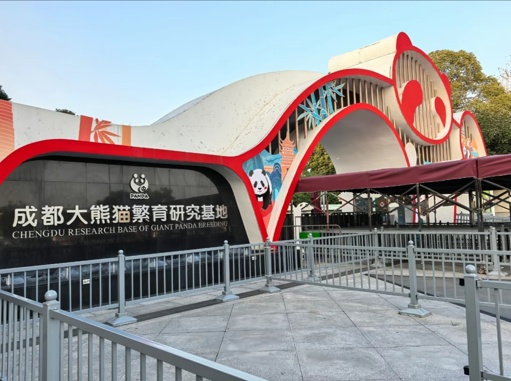
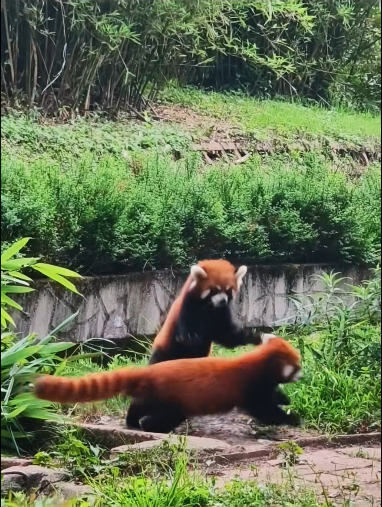

The Chengdu Research Base of Giant Panda Breeding is the world's largest panda breeding center, home to over 200 giant pandas and red pandas. Located just 10 km from downtown Chengdu, this 600-acre facility offers visitors the chance to see these adorable creatures in a natural habitat setting. Watch pandas eat bamboo, play, climb trees, and sleep - an unforgettable experience for visitors of all ages.






Metro Line 3: Take Line 3 to Panda Avenue Station (熊猫大道站), Exit A. Then take shuttle bus D025 to the base (10 min, ¥2). Total cost: ¥4-5.
Bus 902: Departs from Wuhou Shrine (武侯祠) directly to the panda base. Runs every 30 minutes from 8:00 AM. Cost: ¥2. Travel time: 40 minutes.
DiDi/Taxi: From downtown Chengdu (Tianfu Square): 30-40 minutes, ¥40-60. From Chengdu East Railway Station: 25 minutes, ¥35-50.
Half-day Tour: Many hotels offer panda base tours including transport and guide. Cost: ¥150-250 per person. Includes hotel pickup.
Best for: Short on time, families with young children
Route: Main Gate → Baby Panda Nursery → Adult Panda Villas → Red Panda Area → Exit
Highlights: See baby pandas, feeding time, photo opportunities
Tips: Arrive at 7:30 AM opening, pandas most active before 9 AM
Best for: Panda enthusiasts, photographers
Route: Main Gate → Moon Delivery House → Baby Panda Nursery → Sun Delivery House → Adult Panda Area → Red Panda Forest → Panda Museum → Exit
Highlights: All panda areas, museum, gift shop
Best for: Animal lovers willing to work
Activities: Clean enclosures, prepare food, observe pandas up close
Cost: ¥200-300 (includes lunch and certificate)
Booking: Must book 2-4 weeks in advance
Best for: Photographers
Tips: Arrive at opening (7:30 AM), bring telephoto lens (200mm+), visit nursery first for baby pandas, then adult areas. Best light: 8-10 AM.
Location: Inside the panda base
Specialty: Noodles, rice dishes, snacks
Hours: 8:00 AM - 5:00 PM
Location: Downtown Chengdu (30 min from base)
Specialty: Sichuan hotpot, dan dan noodles, mapo tofu
Hours: 11:00 AM - 10:00 PM
Location: Multiple locations in Chengdu
Specialty: Authentic Sichuan spicy hotpot
Hours: 11:00 AM - 2:00 AM
Location: Downtown Chengdu
Specialty: Wontons, dumplings, sweet water noodles
Hours: 7:00 AM - 9:00 PM
Location: Near panda base (2 km)
Features: Panda-themed rooms, Family-friendly
Distance to Base: 5 min drive
Location: Downtown Chengdu (IFS building)
Features: Luxury, Shopping mall access, City views
Distance to Base: 30 min drive
Location: Wuhou District
Features: International standard, Good transport links
Distance to Base: 40 min drive
Location: Chunxi Road shopping district
Features: Central location, Shopping, Street food
Distance to Base: 30-40 min by metro